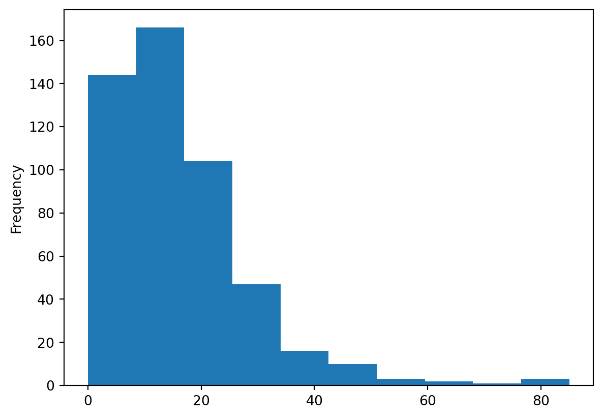
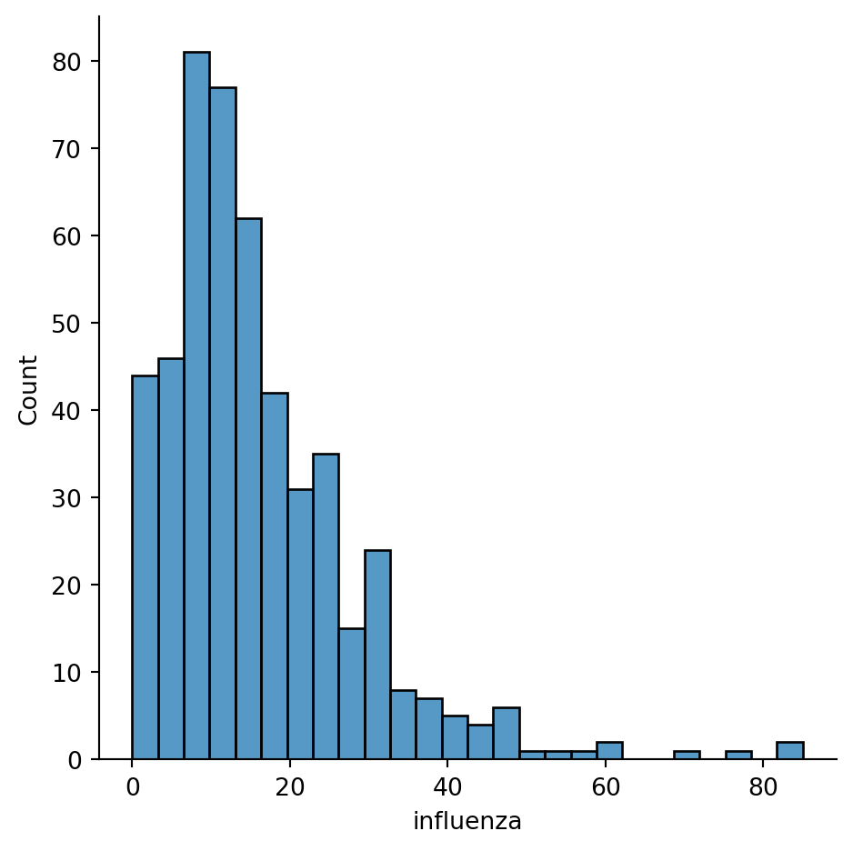
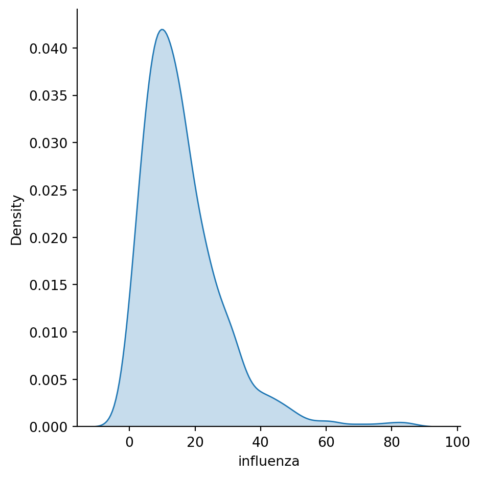
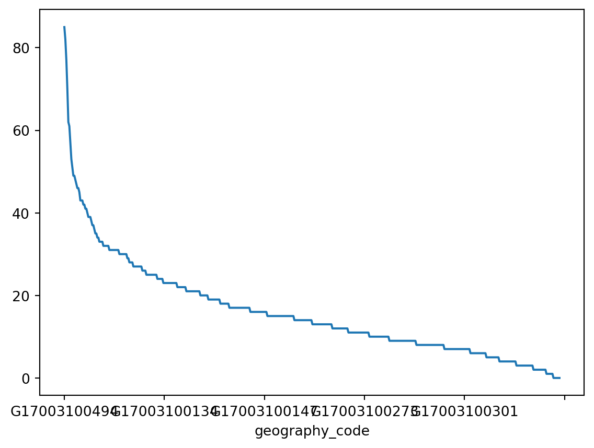
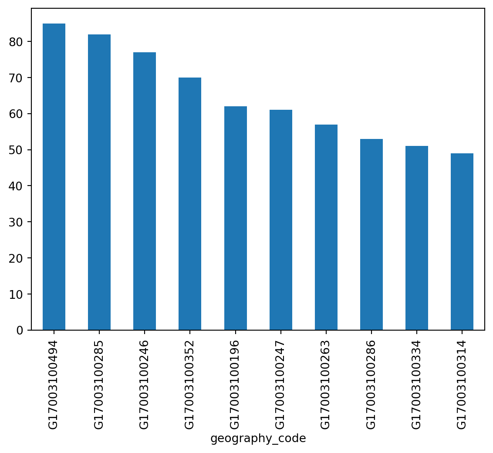
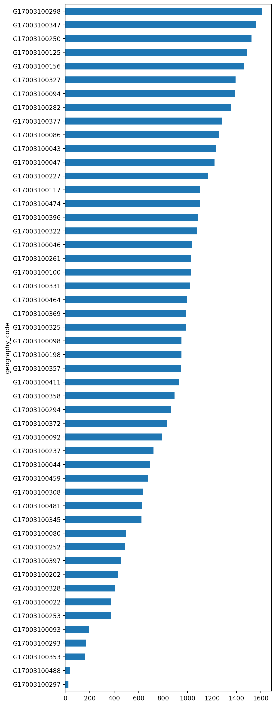

1import pandas as pd- 1
-
Import the
pandaspackage under the aliaspd. Using the alias is not necessary, but it is a convention nearly everyone follows.
You know the basics. What are Jupyter notebooks, how do they work, and how do you run Python in them. It is time to start using them for data science (no, that simple math you did the last time doesn’t count as data science).
You are about to enter the PyData ecosystem. It means that you will start learning how to work with Python from the middle. This course does not explicitly cover the fundamentals of programming. It is expected that those parts you need you’ll be able to pick as you go through the specialised data science stack. If you’re stuck, confused or need further explanation, use Google (or your favourite search engine), ask AI to explain the code or ask in Slack or during the class. Not everything will be told during the course (by design), and the internet is a friend of every programmer, so let’s figure out how to use it efficiently from the beginning.
Let’s dig in!
Real-world datasets are messy. There is no way around it: datasets have “holes” (missing data), the amount of formats in which data can be stored is endless, and the best structure to share data is not always the optimum to analyse them, hence the need to munge1 them. As has been correctly pointed out in many outlets, much of the time spent in what is called Data Science is related not only to sophisticated modelling and insight but has to do with much more basic and less exotic tasks such as obtaining data, processing, and turning them into a shape that makes analysis possible, and exploring it to get to know their basic properties.
Surprisingly, very little has been published on patterns, techniques, and best practices for quick and efficient data cleaning, manipulation, and transformation because of how labour-intensive and relevant this aspect is. In this session, you will use a few real-world datasets and learn how to process them into Python so they can be transformed and manipulated, if necessary, and analysed. For this, we will introduce some of the bread and butter of data analysis and scientific computing in Python. These are fundamental tools that are constantly used in almost any task relating to data analysis.
This notebook covers the basics and the content that is expected to be learnt by every student. You use a prepared dataset that saves us much of the more intricate processing that goes beyond the introductory level the session is aimed at. If you are interested in how it was done, there is a notebook.
This notebook discusses several patterns to clean and structure data properly, including tidying, subsetting, and aggregating. We finish with some basic visualisation. An additional extension presents more advanced tricks to manipulate tabular data.
You will be exploring demographic characteristics of Chicago in 1918 linked to the influenza mortality during the pandemic that happened back then, coming from the research paper by Grantz et al. (2016). The data are aggregated to census tracts and contain information on unemployment, home ownership, age structure and influenza mortality from a period of 8 weeks.
The main tool you use is the pandas package. As with the math you used before, you must import it first.
1import pandas as pdpandas package under the alias pd. Using the alias is not necessary, but it is a convention nearly everyone follows.
The data is stored in a CSV
Intro
DataFrame
chicago_1918| gross_acres | illit | unemployed_pct | ho_pct | agecat1 | agecat2 | agecat3 | agecat4 | agecat5 | agecat6 | agecat7 | influenza | |
|---|---|---|---|---|---|---|---|---|---|---|---|---|
| geography_code | ||||||||||||
| G17003100001 | 1388.2 | 116 | 0.376950 | 0.124823 | 46 | 274 | 257 | 311 | 222 | 1122 | 587 | 9 |
| G17003100002 | 217.7 | 14 | 0.399571 | 0.071647 | 35 | 320 | 441 | 624 | 276 | 1061 | 508 | 6 |
| G17003100003 | 401.3 | 69 | 0.349558 | 0.092920 | 50 | 265 | 179 | 187 | 163 | 1020 | 392 | 8 |
| G17003100004 | 86.9 | 11 | 0.422535 | 0.030072 | 43 | 241 | 129 | 141 | 123 | 1407 | 539 | 2 |
| G17003100005 | 337.1 | 20 | 0.431822 | 0.084703 | 65 | 464 | 369 | 464 | 328 | 2625 | 1213 | 7 |
| ... | ... | ... | ... | ... | ... | ... | ... | ... | ... | ... | ... | ... |
| G17003100492 | 2176.6 | 136 | 0.404430 | 0.173351 | 85 | 606 | 520 | 705 | 439 | 2141 | 1460 | 12 |
| G17003100493 | 680.0 | 271 | 0.377207 | 0.130158 | 243 | 1349 | 957 | 1264 | 957 | 4653 | 2180 | 40 |
| G17003100494 | 1392.8 | 1504 | 0.336032 | 0.072317 | 309 | 1779 | 1252 | 1598 | 1086 | 6235 | 2673 | 85 |
| G17003100495 | 640.0 | 167 | 0.311917 | 0.085667 | 59 | 333 | 206 | 193 | 80 | 726 | 224 | 15 |
| G17003100496 | 709.8 | 340 | 0.369765 | 0.113549 | 157 | 979 | 761 | 959 | 594 | 2862 | 1206 | 30 |
496 rows × 12 columns
Series
chicago_1918["influenza"]geography_code
G17003100001 9
G17003100002 6
G17003100003 8
G17003100004 2
G17003100005 7
..
G17003100492 12
G17003100493 40
G17003100494 85
G17003100495 15
G17003100496 30
Name: influenza, Length: 496, dtype: int64chicago_1918.head()| gross_acres | illit | unemployed_pct | ho_pct | agecat1 | agecat2 | agecat3 | agecat4 | agecat5 | agecat6 | agecat7 | influenza | |
|---|---|---|---|---|---|---|---|---|---|---|---|---|
| geography_code | ||||||||||||
| G17003100001 | 1388.2 | 116 | 0.376950 | 0.124823 | 46 | 274 | 257 | 311 | 222 | 1122 | 587 | 9 |
| G17003100002 | 217.7 | 14 | 0.399571 | 0.071647 | 35 | 320 | 441 | 624 | 276 | 1061 | 508 | 6 |
| G17003100003 | 401.3 | 69 | 0.349558 | 0.092920 | 50 | 265 | 179 | 187 | 163 | 1020 | 392 | 8 |
| G17003100004 | 86.9 | 11 | 0.422535 | 0.030072 | 43 | 241 | 129 | 141 | 123 | 1407 | 539 | 2 |
| G17003100005 | 337.1 | 20 | 0.431822 | 0.084703 | 65 | 464 | 369 | 464 | 328 | 2625 | 1213 | 7 |
chicago_1918.tail()| gross_acres | illit | unemployed_pct | ho_pct | agecat1 | agecat2 | agecat3 | agecat4 | agecat5 | agecat6 | agecat7 | influenza | |
|---|---|---|---|---|---|---|---|---|---|---|---|---|
| geography_code | ||||||||||||
| G17003100492 | 2176.6 | 136 | 0.404430 | 0.173351 | 85 | 606 | 520 | 705 | 439 | 2141 | 1460 | 12 |
| G17003100493 | 680.0 | 271 | 0.377207 | 0.130158 | 243 | 1349 | 957 | 1264 | 957 | 4653 | 2180 | 40 |
| G17003100494 | 1392.8 | 1504 | 0.336032 | 0.072317 | 309 | 1779 | 1252 | 1598 | 1086 | 6235 | 2673 | 85 |
| G17003100495 | 640.0 | 167 | 0.311917 | 0.085667 | 59 | 333 | 206 | 193 | 80 | 726 | 224 | 15 |
| G17003100496 | 709.8 | 340 | 0.369765 | 0.113549 | 157 | 979 | 761 | 959 | 594 | 2862 | 1206 | 30 |
chicago_1918.info()<class 'pandas.core.frame.DataFrame'>
Index: 496 entries, G17003100001 to G17003100496
Data columns (total 12 columns):
# Column Non-Null Count Dtype
--- ------ -------------- -----
0 gross_acres 496 non-null float64
1 illit 496 non-null int64
2 unemployed_pct 496 non-null float64
3 ho_pct 496 non-null float64
4 agecat1 496 non-null int64
5 agecat2 496 non-null int64
6 agecat3 496 non-null int64
7 agecat4 496 non-null int64
8 agecat5 496 non-null int64
9 agecat6 496 non-null int64
10 agecat7 496 non-null int64
11 influenza 496 non-null int64
dtypes: float64(3), int64(9)
memory usage: 66.5+ KBchicago_1918.describe()| gross_acres | illit | unemployed_pct | ho_pct | agecat1 | agecat2 | agecat3 | agecat4 | agecat5 | agecat6 | agecat7 | influenza | |
|---|---|---|---|---|---|---|---|---|---|---|---|---|
| count | 496.000000 | 496.000000 | 496.000000 | 496.000000 | 496.000000 | 496.000000 | 496.000000 | 496.000000 | 496.000000 | 496.000000 | 496.000000 | 496.000000 |
| mean | 233.245968 | 199.116935 | 0.345818 | 0.061174 | 102.370968 | 555.167339 | 406.560484 | 524.100806 | 416.044355 | 2361.582661 | 1052.681452 | 16.070565 |
| std | 391.630857 | 297.836201 | 0.050498 | 0.038189 | 78.677423 | 423.526444 | 301.564896 | 369.875444 | 281.825682 | 1545.469426 | 722.955717 | 12.252440 |
| min | 6.900000 | 0.000000 | 0.057800 | 0.000000 | 0.000000 | 3.000000 | 1.000000 | 4.000000 | 0.000000 | 8.000000 | 6.000000 | 0.000000 |
| 25% | 79.975000 | 30.750000 | 0.323973 | 0.032106 | 46.750000 | 256.500000 | 193.500000 | 253.750000 | 220.500000 | 1169.750000 | 519.750000 | 8.000000 |
| 50% | 99.500000 | 84.000000 | 0.353344 | 0.054389 | 82.000000 | 442.500000 | 331.500000 | 453.500000 | 377.000000 | 2102.000000 | 918.500000 | 13.500000 |
| 75% | 180.125000 | 241.250000 | 0.373382 | 0.084762 | 136.000000 | 717.500000 | 532.500000 | 709.500000 | 551.750000 | 3191.750000 | 1379.250000 | 21.000000 |
| max | 3840.000000 | 2596.000000 | 0.495413 | 0.197391 | 427.000000 | 2512.000000 | 1917.000000 | 2665.000000 | 2454.000000 | 9792.000000 | 4163.000000 | 85.000000 |
chicago_1918.describe().T| count | mean | std | min | 25% | 50% | 75% | max | |
|---|---|---|---|---|---|---|---|---|
| gross_acres | 496.0 | 233.245968 | 391.630857 | 6.9000 | 79.975000 | 99.500000 | 180.125000 | 3840.000000 |
| illit | 496.0 | 199.116935 | 297.836201 | 0.0000 | 30.750000 | 84.000000 | 241.250000 | 2596.000000 |
| unemployed_pct | 496.0 | 0.345818 | 0.050498 | 0.0578 | 0.323973 | 0.353344 | 0.373382 | 0.495413 |
| ho_pct | 496.0 | 0.061174 | 0.038189 | 0.0000 | 0.032106 | 0.054389 | 0.084762 | 0.197391 |
| agecat1 | 496.0 | 102.370968 | 78.677423 | 0.0000 | 46.750000 | 82.000000 | 136.000000 | 427.000000 |
| agecat2 | 496.0 | 555.167339 | 423.526444 | 3.0000 | 256.500000 | 442.500000 | 717.500000 | 2512.000000 |
| agecat3 | 496.0 | 406.560484 | 301.564896 | 1.0000 | 193.500000 | 331.500000 | 532.500000 | 1917.000000 |
| agecat4 | 496.0 | 524.100806 | 369.875444 | 4.0000 | 253.750000 | 453.500000 | 709.500000 | 2665.000000 |
| agecat5 | 496.0 | 416.044355 | 281.825682 | 0.0000 | 220.500000 | 377.000000 | 551.750000 | 2454.000000 |
| agecat6 | 496.0 | 2361.582661 | 1545.469426 | 8.0000 | 1169.750000 | 2102.000000 | 3191.750000 | 9792.000000 |
| agecat7 | 496.0 | 1052.681452 | 722.955717 | 6.0000 | 519.750000 | 918.500000 | 1379.250000 | 4163.000000 |
| influenza | 496.0 | 16.070565 | 12.252440 | 0.0000 | 8.000000 | 13.500000 | 21.000000 | 85.000000 |
chicago_1918.min()gross_acres 6.9000
illit 0.0000
unemployed_pct 0.0578
ho_pct 0.0000
agecat1 0.0000
agecat2 3.0000
agecat3 1.0000
agecat4 4.0000
agecat5 0.0000
agecat6 8.0000
agecat7 6.0000
influenza 0.0000
dtype: float64chicago_1918.loc["G17003100002"].min()0.071647275chicago_1918.loc["G17003100002", "agecat1":"agecat7"].min()35.0total_population = (
chicago_1918["agecat1"]
+ chicago_1918["agecat2"]
+ chicago_1918["agecat3"]
+ chicago_1918["agecat4"]
+ chicago_1918["agecat5"]
+ chicago_1918["agecat6"]
+ chicago_1918["agecat7"]
)
total_population.head()geography_code
G17003100001 2819
G17003100002 3265
G17003100003 2256
G17003100004 2623
G17003100005 5528
dtype: int64total_population = chicago_1918.loc[:, "agecat1":"agecat7"].sum(axis=1)
total_population.head()geography_code
G17003100001 2819
G17003100002 3265
G17003100003 2256
G17003100004 2623
G17003100005 5528
dtype: int64chicago_1918["total_population"] = total_population
chicago_1918.head()| gross_acres | illit | unemployed_pct | ho_pct | agecat1 | agecat2 | agecat3 | agecat4 | agecat5 | agecat6 | agecat7 | influenza | total_population | |
|---|---|---|---|---|---|---|---|---|---|---|---|---|---|
| geography_code | |||||||||||||
| G17003100001 | 1388.2 | 116 | 0.376950 | 0.124823 | 46 | 274 | 257 | 311 | 222 | 1122 | 587 | 9 | 2819 |
| G17003100002 | 217.7 | 14 | 0.399571 | 0.071647 | 35 | 320 | 441 | 624 | 276 | 1061 | 508 | 6 | 3265 |
| G17003100003 | 401.3 | 69 | 0.349558 | 0.092920 | 50 | 265 | 179 | 187 | 163 | 1020 | 392 | 8 | 2256 |
| G17003100004 | 86.9 | 11 | 0.422535 | 0.030072 | 43 | 241 | 129 | 141 | 123 | 1407 | 539 | 2 | 2623 |
| G17003100005 | 337.1 | 20 | 0.431822 | 0.084703 | 65 | 464 | 369 | 464 | 328 | 2625 | 1213 | 7 | 5528 |
homeowners = chicago_1918["total_population"] * chicago_1918["ho_pct"]
homeowners.head()geography_code
G17003100001 351.875177
G17003100002 233.928353
G17003100003 209.628319
G17003100004 78.879711
G17003100005 468.237675
dtype: float64pop_density = chicago_1918["total_population"] / chicago_1918["gross_acres"]
pop_density.head()geography_code
G17003100001 2.030687
G17003100002 14.997703
G17003100003 5.621729
G17003100004 30.184120
G17003100005 16.398695
dtype: float64chicago_1918['ones'] = 1
chicago_1918.head()| gross_acres | illit | unemployed_pct | ho_pct | agecat1 | agecat2 | agecat3 | agecat4 | agecat5 | agecat6 | agecat7 | influenza | total_population | ones | |
|---|---|---|---|---|---|---|---|---|---|---|---|---|---|---|
| geography_code | ||||||||||||||
| G17003100001 | 1388.2 | 116 | 0.376950 | 0.124823 | 46 | 274 | 257 | 311 | 222 | 1122 | 587 | 9 | 2819 | 1 |
| G17003100002 | 217.7 | 14 | 0.399571 | 0.071647 | 35 | 320 | 441 | 624 | 276 | 1061 | 508 | 6 | 3265 | 1 |
| G17003100003 | 401.3 | 69 | 0.349558 | 0.092920 | 50 | 265 | 179 | 187 | 163 | 1020 | 392 | 8 | 2256 | 1 |
| G17003100004 | 86.9 | 11 | 0.422535 | 0.030072 | 43 | 241 | 129 | 141 | 123 | 1407 | 539 | 2 | 2623 | 1 |
| G17003100005 | 337.1 | 20 | 0.431822 | 0.084703 | 65 | 464 | 369 | 464 | 328 | 2625 | 1213 | 7 | 5528 | 1 |
chicago_1918.loc["G17003100001", "ones"] = 3
chicago_1918.head()| gross_acres | illit | unemployed_pct | ho_pct | agecat1 | agecat2 | agecat3 | agecat4 | agecat5 | agecat6 | agecat7 | influenza | total_population | ones | |
|---|---|---|---|---|---|---|---|---|---|---|---|---|---|---|
| geography_code | ||||||||||||||
| G17003100001 | 1388.2 | 116 | 0.376950 | 0.124823 | 46 | 274 | 257 | 311 | 222 | 1122 | 587 | 9 | 2819 | 3 |
| G17003100002 | 217.7 | 14 | 0.399571 | 0.071647 | 35 | 320 | 441 | 624 | 276 | 1061 | 508 | 6 | 3265 | 1 |
| G17003100003 | 401.3 | 69 | 0.349558 | 0.092920 | 50 | 265 | 179 | 187 | 163 | 1020 | 392 | 8 | 2256 | 1 |
| G17003100004 | 86.9 | 11 | 0.422535 | 0.030072 | 43 | 241 | 129 | 141 | 123 | 1407 | 539 | 2 | 2623 | 1 |
| G17003100005 | 337.1 | 20 | 0.431822 | 0.084703 | 65 | 464 | 369 | 464 | 328 | 2625 | 1213 | 7 | 5528 | 1 |
chicago_1918 = chicago_1918.drop(columns="ones")
chicago_1918.head()| gross_acres | illit | unemployed_pct | ho_pct | agecat1 | agecat2 | agecat3 | agecat4 | agecat5 | agecat6 | agecat7 | influenza | total_population | |
|---|---|---|---|---|---|---|---|---|---|---|---|---|---|
| geography_code | |||||||||||||
| G17003100001 | 1388.2 | 116 | 0.376950 | 0.124823 | 46 | 274 | 257 | 311 | 222 | 1122 | 587 | 9 | 2819 |
| G17003100002 | 217.7 | 14 | 0.399571 | 0.071647 | 35 | 320 | 441 | 624 | 276 | 1061 | 508 | 6 | 3265 |
| G17003100003 | 401.3 | 69 | 0.349558 | 0.092920 | 50 | 265 | 179 | 187 | 163 | 1020 | 392 | 8 | 2256 |
| G17003100004 | 86.9 | 11 | 0.422535 | 0.030072 | 43 | 241 | 129 | 141 | 123 | 1407 | 539 | 2 | 2623 |
| G17003100005 | 337.1 | 20 | 0.431822 | 0.084703 | 65 | 464 | 369 | 464 | 328 | 2625 | 1213 | 7 | 5528 |
death_pop_first4 = chicago_1918.loc[
["G17003100001", "G17003100002", "G17003100003", "G17003100004"],
["influenza", "total_population"],
]
death_pop_first4| influenza | total_population | |
|---|---|---|
| geography_code | ||
| G17003100001 | 9 | 2819 |
| G17003100002 | 6 | 3265 |
| G17003100003 | 8 | 2256 |
| G17003100004 | 2 | 2623 |
range_query = chicago_1918.loc[
"G17003100010":"G17003100012",
"influenza":'total_population',
]
range_query| influenza | total_population | |
|---|---|---|
| geography_code | ||
| G17003100010 | 18 | 11380 |
| G17003100011 | 16 | 8382 |
| G17003100012 | 8 | 5874 |
mix both together
range_list_qry = chicago_1918.loc[
"G17003100010":"G17003100012", ["influenza", "total_population"]
]
range_list_qry| influenza | total_population | |
|---|---|---|
| geography_code | ||
| G17003100010 | 18 | 11380 |
| G17003100011 | 16 | 8382 |
| G17003100012 | 8 | 5874 |
flu_over_60 = chicago_1918.loc[chicago_1918["influenza"] > 60]
flu_over_60| gross_acres | illit | unemployed_pct | ho_pct | agecat1 | agecat2 | agecat3 | agecat4 | agecat5 | agecat6 | agecat7 | influenza | total_population | |
|---|---|---|---|---|---|---|---|---|---|---|---|---|---|
| geography_code | |||||||||||||
| G17003100196 | 80.5 | 951 | 0.301564 | 0.016648 | 228 | 1504 | 925 | 998 | 608 | 3583 | 1092 | 62 | 8938 |
| G17003100246 | 113.0 | 2596 | 0.330517 | 0.027537 | 407 | 2090 | 1497 | 1681 | 1063 | 4564 | 1934 | 77 | 13236 |
| G17003100247 | 91.1 | 1534 | 0.293748 | 0.020664 | 215 | 1136 | 770 | 775 | 530 | 2993 | 1152 | 61 | 7571 |
| G17003100285 | 120.0 | 621 | 0.318677 | 0.047779 | 419 | 1870 | 1190 | 1263 | 818 | 4370 | 1335 | 82 | 11265 |
| G17003100352 | 600.0 | 638 | 0.267962 | 0.055023 | 404 | 1962 | 1251 | 1151 | 603 | 5261 | 1251 | 70 | 11883 |
| G17003100494 | 1392.8 | 1504 | 0.336032 | 0.072317 | 309 | 1779 | 1252 | 1598 | 1086 | 6235 | 2673 | 85 | 14932 |
pop_under = chicago_1918.loc[chicago_1918["total_population"] < 200]
pop_under| gross_acres | illit | unemployed_pct | ho_pct | agecat1 | agecat2 | agecat3 | agecat4 | agecat5 | agecat6 | agecat7 | influenza | total_population | |
|---|---|---|---|---|---|---|---|---|---|---|---|---|---|
| geography_code | |||||||||||||
| G17003100093 | 71.2 | 34 | 0.268041 | 0.025773 | 4 | 33 | 20 | 25 | 10 | 66 | 36 | 0 | 194 |
| G17003100293 | 40.0 | 17 | 0.345238 | 0.053571 | 4 | 23 | 18 | 26 | 16 | 59 | 22 | 0 | 168 |
| G17003100297 | 38.1 | 4 | 0.461538 | 0.000000 | 0 | 3 | 1 | 4 | 0 | 8 | 10 | 0 | 26 |
| G17003100353 | 320.0 | 28 | 0.193750 | 0.018750 | 1 | 7 | 4 | 10 | 12 | 80 | 46 | 2 | 160 |
| G17003100488 | 1600.1 | 3 | 0.404762 | 0.000000 | 2 | 5 | 4 | 7 | 1 | 17 | 6 | 0 | 42 |
illit_100 = chicago_1918.loc[chicago_1918["illit"] == 100]
illit_100| gross_acres | illit | unemployed_pct | ho_pct | agecat1 | agecat2 | agecat3 | agecat4 | agecat5 | agecat6 | agecat7 | influenza | total_population | |
|---|---|---|---|---|---|---|---|---|---|---|---|---|---|
| geography_code | |||||||||||||
| G17003100076 | 79.4 | 100 | 0.326936 | 0.043691 | 140 | 791 | 562 | 666 | 520 | 3163 | 1496 | 20 | 7338 |
| G17003100483 | 670.0 | 100 | 0.379153 | 0.142368 | 188 | 1170 | 829 | 1132 | 763 | 3191 | 1482 | 21 | 8755 |
chicago_1918.loc[
(chicago_1918["agecat7"] * 100 / chicago_1918["total_population"]) > 50
]| gross_acres | illit | unemployed_pct | ho_pct | agecat1 | agecat2 | agecat3 | agecat4 | agecat5 | agecat6 | agecat7 | influenza | total_population | |
|---|---|---|---|---|---|---|---|---|---|---|---|---|---|
| geography_code | |||||||||||||
| G17003100227 | 146.3 | 22 | 0.0657 | 0.000853 | 2 | 16 | 9 | 22 | 27 | 480 | 614 | 3 | 1170 |
flu_over_60_query = chicago_1918.query("influenza > 60")
flu_over_60_query| gross_acres | illit | unemployed_pct | ho_pct | agecat1 | agecat2 | agecat3 | agecat4 | agecat5 | agecat6 | agecat7 | influenza | total_population | |
|---|---|---|---|---|---|---|---|---|---|---|---|---|---|
| geography_code | |||||||||||||
| G17003100196 | 80.5 | 951 | 0.301564 | 0.016648 | 228 | 1504 | 925 | 998 | 608 | 3583 | 1092 | 62 | 8938 |
| G17003100246 | 113.0 | 2596 | 0.330517 | 0.027537 | 407 | 2090 | 1497 | 1681 | 1063 | 4564 | 1934 | 77 | 13236 |
| G17003100247 | 91.1 | 1534 | 0.293748 | 0.020664 | 215 | 1136 | 770 | 775 | 530 | 2993 | 1152 | 61 | 7571 |
| G17003100285 | 120.0 | 621 | 0.318677 | 0.047779 | 419 | 1870 | 1190 | 1263 | 818 | 4370 | 1335 | 82 | 11265 |
| G17003100352 | 600.0 | 638 | 0.267962 | 0.055023 | 404 | 1962 | 1251 | 1151 | 603 | 5261 | 1251 | 70 | 11883 |
| G17003100494 | 1392.8 | 1504 | 0.336032 | 0.072317 | 309 | 1779 | 1252 | 1598 | 1086 | 6235 | 2673 | 85 | 14932 |
flu_query = chicago_1918.query("(influenza > 60) & (total_population < 10000)")
flu_query| gross_acres | illit | unemployed_pct | ho_pct | agecat1 | agecat2 | agecat3 | agecat4 | agecat5 | agecat6 | agecat7 | influenza | total_population | |
|---|---|---|---|---|---|---|---|---|---|---|---|---|---|
| geography_code | |||||||||||||
| G17003100196 | 80.5 | 951 | 0.301564 | 0.016648 | 228 | 1504 | 925 | 998 | 608 | 3583 | 1092 | 62 | 8938 |
| G17003100247 | 91.1 | 1534 | 0.293748 | 0.020664 | 215 | 1136 | 770 | 775 | 530 | 2993 | 1152 | 61 | 7571 |
flu_loc = chicago_1918.loc[
(chicago_1918["influenza"] > 60) & (chicago_1918["total_population"] < 10000)
]
flu_loc| gross_acres | illit | unemployed_pct | ho_pct | agecat1 | agecat2 | agecat3 | agecat4 | agecat5 | agecat6 | agecat7 | influenza | total_population | |
|---|---|---|---|---|---|---|---|---|---|---|---|---|---|
| geography_code | |||||||||||||
| G17003100196 | 80.5 | 951 | 0.301564 | 0.016648 | 228 | 1504 | 925 | 998 | 608 | 3583 | 1092 | 62 | 8938 |
| G17003100247 | 91.1 | 1534 | 0.293748 | 0.020664 | 215 | 1136 | 770 | 775 | 530 | 2993 | 1152 | 61 | 7571 |
Let’s unpack it.
chicago_1918["influenza"] > 60geography_code
G17003100001 False
G17003100002 False
G17003100003 False
G17003100004 False
G17003100005 False
...
G17003100492 False
G17003100493 False
G17003100494 True
G17003100495 False
G17003100496 False
Name: influenza, Length: 496, dtype: boolchicago_1918["total_population"] < 10000geography_code
G17003100001 True
G17003100002 True
G17003100003 True
G17003100004 True
G17003100005 True
...
G17003100492 True
G17003100493 False
G17003100494 False
G17003100495 True
G17003100496 True
Name: total_population, Length: 496, dtype: bool(chicago_1918["influenza"] > 60) & (chicago_1918["total_population"] < 10000)geography_code
G17003100001 False
G17003100002 False
G17003100003 False
G17003100004 False
G17003100005 False
...
G17003100492 False
G17003100493 False
G17003100494 False
G17003100495 False
G17003100496 False
Length: 496, dtype: boolchicago_sorted = chicago_1918.sort_values('influenza', ascending=False)
chicago_sorted| gross_acres | illit | unemployed_pct | ho_pct | agecat1 | agecat2 | agecat3 | agecat4 | agecat5 | agecat6 | agecat7 | influenza | total_population | |
|---|---|---|---|---|---|---|---|---|---|---|---|---|---|
| geography_code | |||||||||||||
| G17003100494 | 1392.8 | 1504 | 0.336032 | 0.072317 | 309 | 1779 | 1252 | 1598 | 1086 | 6235 | 2673 | 85 | 14932 |
| G17003100285 | 120.0 | 621 | 0.318677 | 0.047779 | 419 | 1870 | 1190 | 1263 | 818 | 4370 | 1335 | 82 | 11265 |
| G17003100246 | 113.0 | 2596 | 0.330517 | 0.027537 | 407 | 2090 | 1497 | 1681 | 1063 | 4564 | 1934 | 77 | 13236 |
| G17003100352 | 600.0 | 638 | 0.267962 | 0.055023 | 404 | 1962 | 1251 | 1151 | 603 | 5261 | 1251 | 70 | 11883 |
| G17003100196 | 80.5 | 951 | 0.301564 | 0.016648 | 228 | 1504 | 925 | 998 | 608 | 3583 | 1092 | 62 | 8938 |
| ... | ... | ... | ... | ... | ... | ... | ... | ... | ... | ... | ... | ... | ... |
| G17003100297 | 38.1 | 4 | 0.461538 | 0.000000 | 0 | 3 | 1 | 4 | 0 | 8 | 10 | 0 | 26 |
| G17003100209 | 124.1 | 13 | 0.438105 | 0.062971 | 30 | 120 | 92 | 196 | 166 | 763 | 491 | 0 | 1858 |
| G17003100293 | 40.0 | 17 | 0.345238 | 0.053571 | 4 | 23 | 18 | 26 | 16 | 59 | 22 | 0 | 168 |
| G17003100202 | 13.1 | 6 | 0.323326 | 0.027714 | 5 | 40 | 24 | 37 | 28 | 218 | 78 | 0 | 430 |
| G17003100396 | 26.2 | 8 | 0.344066 | 0.015639 | 14 | 54 | 31 | 53 | 48 | 609 | 275 | 0 | 1084 |
496 rows × 13 columns
those are abs number, sort by relative
chicago_1918["flu_rate"] = chicago_1918["influenza"] / chicago_1918["total_population"]
chicago_sorted_rel = chicago_1918.sort_values('flu_rate', ascending=False)
chicago_sorted_rel| gross_acres | illit | unemployed_pct | ho_pct | agecat1 | agecat2 | agecat3 | agecat4 | agecat5 | agecat6 | agecat7 | influenza | total_population | flu_rate | |
|---|---|---|---|---|---|---|---|---|---|---|---|---|---|---|
| geography_code | ||||||||||||||
| G17003100086 | 140.7 | 153 | 0.331750 | 0.034838 | 39 | 179 | 144 | 197 | 111 | 399 | 189 | 26 | 1258 | 0.020668 |
| G17003100022 | 233.2 | 20 | 0.369973 | 0.107239 | 6 | 28 | 35 | 48 | 28 | 151 | 77 | 7 | 373 | 0.018767 |
| G17003100261 | 164.9 | 287 | 0.307767 | 0.031068 | 25 | 126 | 92 | 113 | 87 | 414 | 172 | 18 | 1029 | 0.017493 |
| G17003100282 | 293.5 | 97 | 0.142330 | 0.044248 | 15 | 70 | 67 | 74 | 198 | 758 | 173 | 20 | 1355 | 0.014760 |
| G17003100249 | 137.0 | 317 | 0.337257 | 0.017202 | 63 | 314 | 277 | 345 | 171 | 718 | 320 | 31 | 2208 | 0.014040 |
| ... | ... | ... | ... | ... | ... | ... | ... | ... | ... | ... | ... | ... | ... | ... |
| G17003100202 | 13.1 | 6 | 0.323326 | 0.027714 | 5 | 40 | 24 | 37 | 28 | 218 | 78 | 0 | 430 | 0.000000 |
| G17003100093 | 71.2 | 34 | 0.268041 | 0.025773 | 4 | 33 | 20 | 25 | 10 | 66 | 36 | 0 | 194 | 0.000000 |
| G17003100293 | 40.0 | 17 | 0.345238 | 0.053571 | 4 | 23 | 18 | 26 | 16 | 59 | 22 | 0 | 168 | 0.000000 |
| G17003100297 | 38.1 | 4 | 0.461538 | 0.000000 | 0 | 3 | 1 | 4 | 0 | 8 | 10 | 0 | 26 | 0.000000 |
| G17003100488 | 1600.1 | 3 | 0.404762 | 0.000000 | 2 | 5 | 4 | 7 | 1 | 17 | 6 | 0 | 42 | 0.000000 |
496 rows × 14 columns
_ = chicago_1918["influenza"].plot.hist()
import seaborn as snssns.displot(chicago_1918["influenza"])
sns.displot(chicago_1918["influenza"], kind="kde", fill=True)
_ = chicago_1918["influenza"].sort_values(ascending=False).plot()
_ = chicago_1918["influenza"].sort_values(ascending=False).head(10).plot.bar()
_ = chicago_1918["total_population"].sort_values().head(50).plot.barh(figsize=(6, 20))
population = chicago_1918.loc[:, "agecat1":"agecat7"]tidy_population = population.stack()
tidy_population.head()geography_code
G17003100001 agecat1 46
agecat2 274
agecat3 257
agecat4 311
agecat5 222
dtype: int64tidy_population_df = tidy_population.reset_index()
tidy_population_df.head()| geography_code | level_1 | 0 | |
|---|---|---|---|
| 0 | G17003100001 | agecat1 | 46 |
| 1 | G17003100001 | agecat2 | 274 |
| 2 | G17003100001 | agecat3 | 257 |
| 3 | G17003100001 | agecat4 | 311 |
| 4 | G17003100001 | agecat5 | 222 |
tidy_population_df = tidy_population_df.rename(
columns={"level_1": "age_category", 0: "count"}
)
tidy_population_df.head()| geography_code | age_category | count | |
|---|---|---|---|
| 0 | G17003100001 | agecat1 | 46 |
| 1 | G17003100001 | agecat2 | 274 |
| 2 | G17003100001 | agecat3 | 257 |
| 3 | G17003100001 | agecat4 | 311 |
| 4 | G17003100001 | agecat5 | 222 |
pop_grouped = tidy_population_df.groupby("age_category")
pop_grouped<pandas.core.groupby.generic.DataFrameGroupBy object at 0x15b5945e0>pop_grouped.sum(numeric_only=True)| count | |
|---|---|
| age_category | |
| agecat1 | 50776 |
| agecat2 | 275363 |
| agecat3 | 201654 |
| agecat4 | 259954 |
| agecat5 | 206358 |
| agecat6 | 1171345 |
| agecat7 | 522130 |
pop_grouped.describe()| count | ||||||||
|---|---|---|---|---|---|---|---|---|
| count | mean | std | min | 25% | 50% | 75% | max | |
| age_category | ||||||||
| agecat1 | 496.0 | 102.370968 | 78.677423 | 0.0 | 46.75 | 82.0 | 136.00 | 427.0 |
| agecat2 | 496.0 | 555.167339 | 423.526444 | 3.0 | 256.50 | 442.5 | 717.50 | 2512.0 |
| agecat3 | 496.0 | 406.560484 | 301.564896 | 1.0 | 193.50 | 331.5 | 532.50 | 1917.0 |
| agecat4 | 496.0 | 524.100806 | 369.875444 | 4.0 | 253.75 | 453.5 | 709.50 | 2665.0 |
| agecat5 | 496.0 | 416.044355 | 281.825682 | 0.0 | 220.50 | 377.0 | 551.75 | 2454.0 |
| agecat6 | 496.0 | 2361.582661 | 1545.469426 | 8.0 | 1169.75 | 2102.0 | 3191.75 | 9792.0 |
| agecat7 | 496.0 | 1052.681452 | 722.955717 | 6.0 | 519.75 | 918.5 | 1379.25 | 4163.0 |
Data munging and data wrangling are used interchangeably. Pick the one you like.↩︎